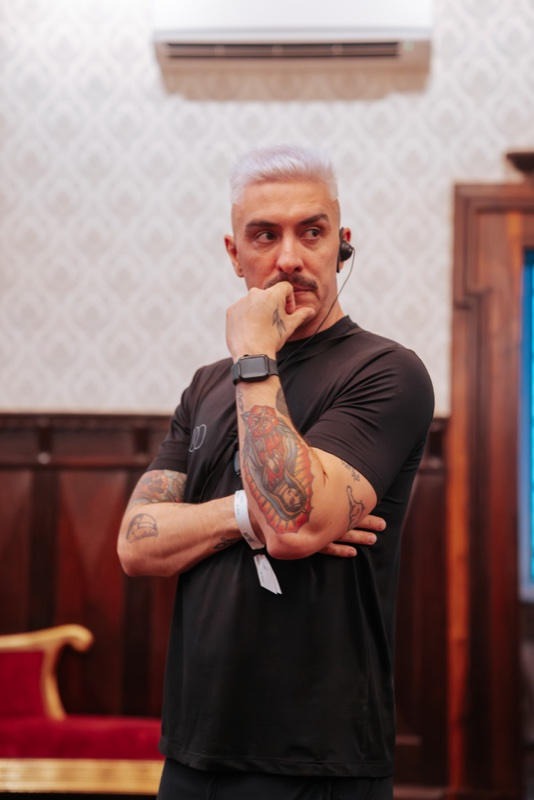
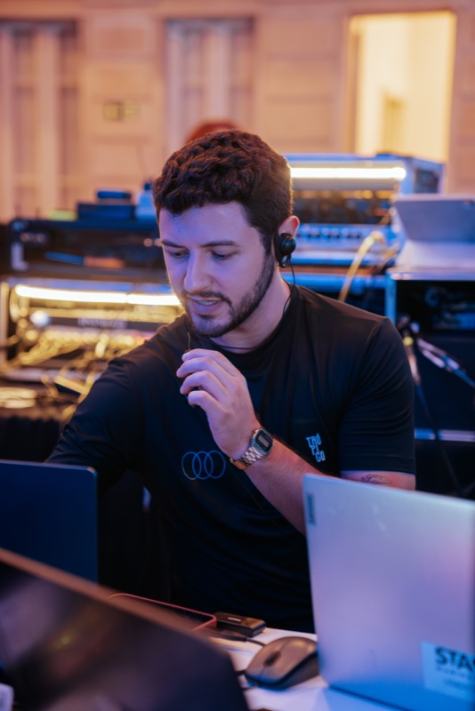
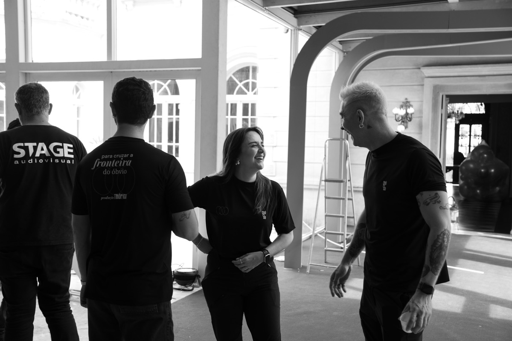
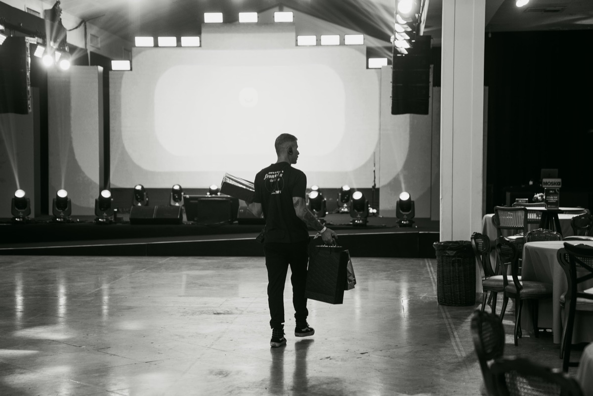
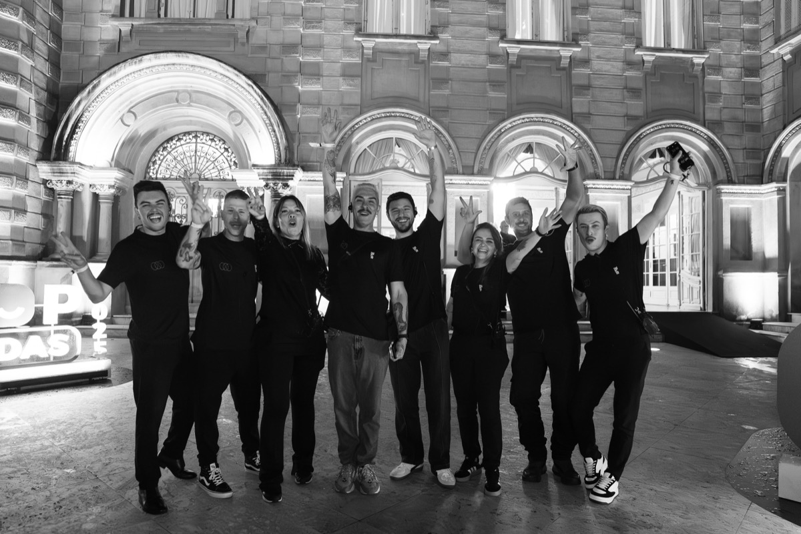
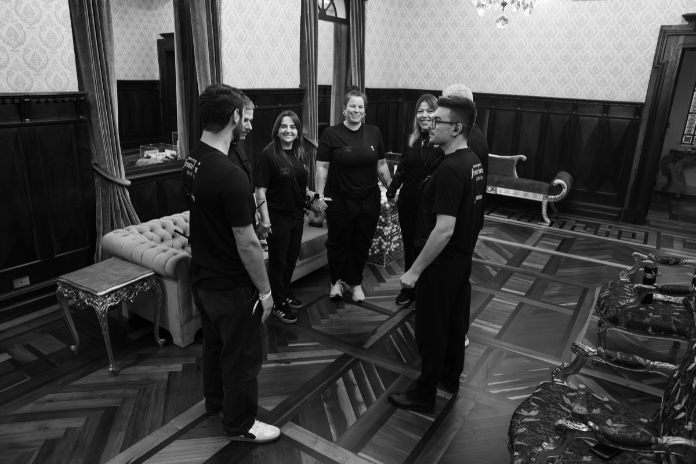

Para cruzar a fronteira do óbvio.
A Trópico nasceu de uma conversa — e da certeza de que evento não precisa ser sinônimo de dor de cabeça.
Ao longo de anos de experiência no universo de eventos corporativos e live marketing, identificamos o que faz a diferença entre um projeto que apenas acontece e um projeto que deixa marca.
Para nós, a criatividade é o pontapé inicial. Mas organização, transparência, respeito e ética de trabalho são os pilares que mantêm essa força criativa firme até a execução.
Planejamos e produzimos projetos de todos os portes — de ativações e experiências imersivas a grandes eventos corporativos — com suporte completo do início ao fim.
Não produzimos eventos. Construímos os segundos que as pessoas vão querer contar depois.
Corporativos, culturais, congressos e shows. Do briefing ao encerramento, com presença em cada detalhe que muda o resultado.
Falar sobre um projeto →Ativações, lançamentos, imersões. Criamos percursos sensoriais que transformam presença em memória afetiva.
Falar sobre um projeto →Captação, transmissão ao vivo, cobertura e criação de conteúdo. Para quem entende que a câmera também tem ponto de vista.
Falar sobre um projeto →"Passando pra registrar meu agradecimento pela parceria nesse evento tão importante pra nós. Que bom ter seguido minha intuição e apostado na Trópico. Aproveitem o descanso e voltem com a energia renovada porque o Top de Vendas 2026 já tá ON!"
"Conseguimos elevar muito o nível do nosso evento por conta da Trópico. Toda vez que eu trago alguma ideia, que normalmente não é nada comum ou convencional, eles topam na hora e me ajudam a executar. Essa parceria com certeza vai ser muito duradoura."

Produtor · DJ · Curador Musical
Produtor de eventos, DJ e curador musical com 16 anos de experiência em festas, shows e festivais. Lidera há 5 anos a abertura do Festival de Teatro de Curitiba. No portfólio, destacam-se Gastronomix, Feira Mia Cara e Virada Paradisíaca, além de eventos corporativos e experiências imersivas.

Produtor · Diretor Artístico
Produtor e diretor artístico com formações em Relações Públicas (UFPR), Cinema (PUC-PR) e Gestão de Entretenimento (PUC-Rio). Especialista em eventos corporativos e experiências de marca, do planejamento à execução. Desde 2024, atua exclusivamente no planejamento, direção artística e gestão de projetos.



